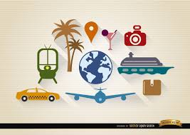
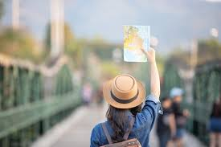
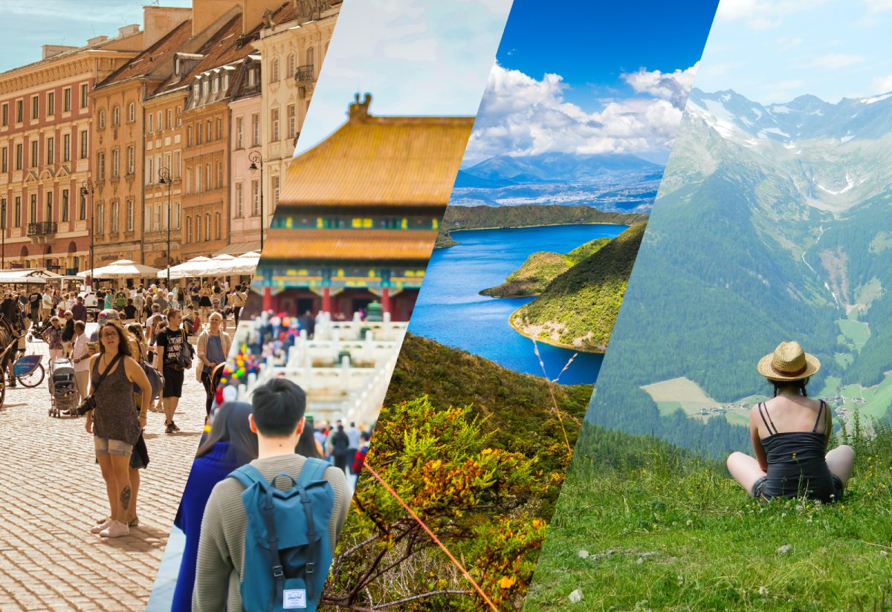

El turismo es la actividad de viajar temporalmente a lugares fuera de tu residencia habitual por placer, culturales y sociales, abarcando diversas formas como ecoturismo, cultural, de aventura y gastronómico.
El objetivo principal es el ocio, el placer, la cultura, la salud o los negocios, siempre que no sea el ejercicio de una actividad remunerada en el lugar visitado.

Los turistas generan un gasto directo en alojamiento, transporte, gastronomía y servicios turísticos, impulsando el desarrollo local.

Es una actividad elegida libremente, diferenciándose de migraciones o desplazamientos forzados.
Es un producto mayormente intangible, basado en la vivencia y la percepción del lugar, que a menudo se parquetematiza para los visitantes.
